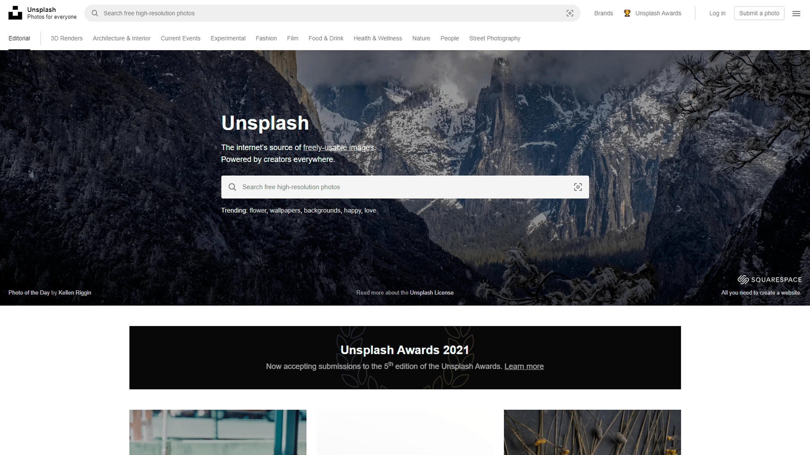
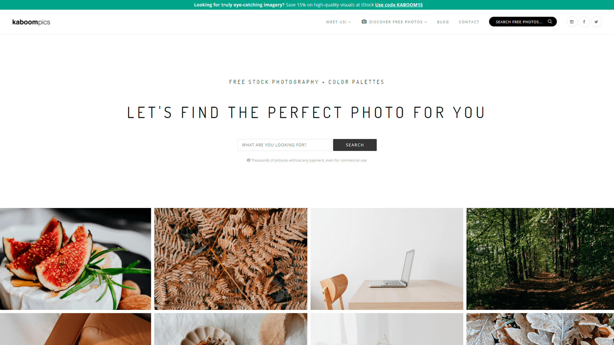
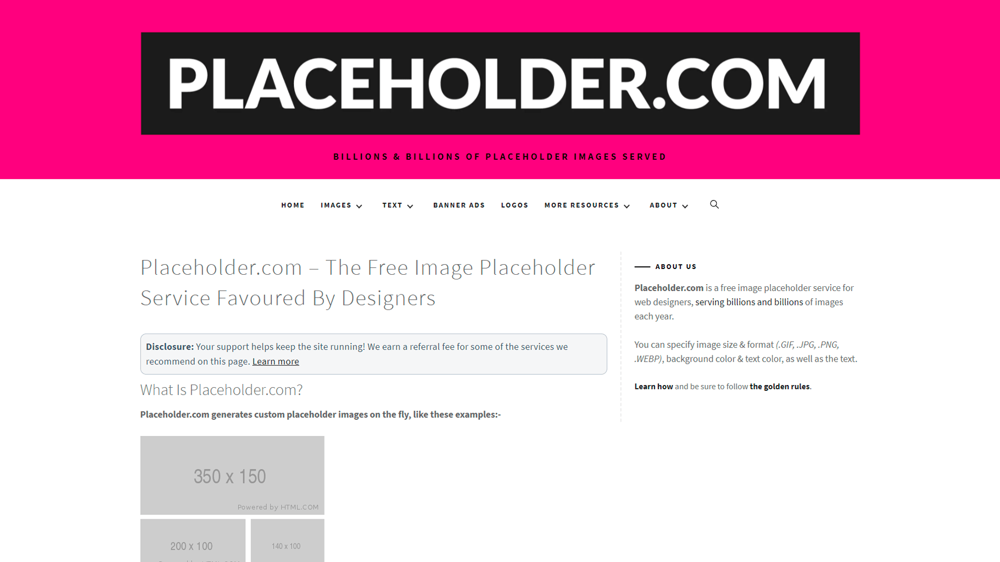
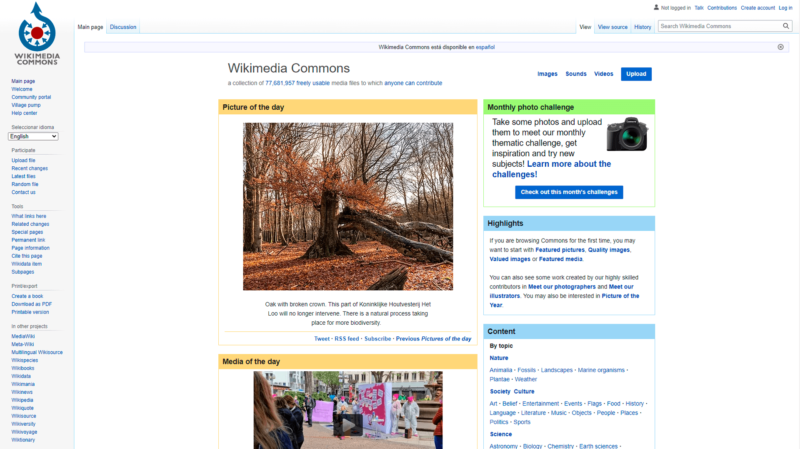
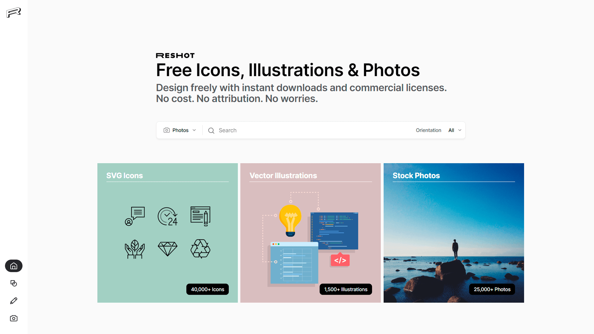

Recursos multimedia gratuito
Todos los que gestionamos un sitio web necesitamos en muchas ocasiones el disponer de una imagen que sirva para acompañar el texto que conforma un artículo. Habitualmente recurrimos al buscador de imágenes de Google, pero no siempre este sistema es válido ya que hay unas cuantas que tienen derechos de autor y que, como consecuencia de ello, no podemos utilizar.
Por ello, ahi sitios de bancos multimedia gratuitos que podemos utilizar tanto comercial o no comercial.
- Pexels
- Unsplash 
- Pixabay
- Videvo
- FreeImages
- KaboomPics 
- Placeholder 
- Wikimedia 
- Reshot 
Pexels ofrece fotos de stock completamente gratuitas y de alta calidad. Todas las fotos están etiquetadas y son fáciles de encontrar en la búsqueda. Tienen cientos de miles de fotos de stock gratuitas y cada día añaden más. Todas las fotos han sido cuidadosamente seleccionadas de entre las fotos subidas por los usuarios o de las provenientes de webs de imágenes gratuitas. Garantizan que todas las fotos publicadas son de alta calidad y que algunas están sujetas a la licencia Creative Commons Zero.
Unsplash es un banco de imágenes gratuito para compartir fotos libres de derechos y en alta resolución. Creada por la agencia de marketing creativo, Crew Labs, se trata de una página donde solo se publican fotos licenciadas con Creative Commons Zero, lo que significa que los usuarios son libres de “copiar, modificar, distribuir y utilizar las fotos”, de forma gratuita y sin necesidad del permiso de su propietario, según explica la declaración de licencia de Unsplash.

Este es un banco multimedia Creative Commons Zero, Pixabay no solo ofrece imágenes, también ofrece vídeos y sonidos, todos bajo licencia Creative Commons Zero (CC0). Eso quiere decir que no necesitas obtener permiso o dar crédito al artista para usar o modificar el contenido, incluso si lo está utilizando con fines comerciales. Pixabay tiene una gran colección multimedia de alta calidad en este sitio web seguro, encontraras contenido multiemdia que buscas.

Videvo ofrece vídeos gratuitos, así como gráficos en movimiento creados por su gran comunidad de usuarios. Los clips que descargues de Videvo tendrán una licencia de dos maneras: ya sea a través de la Licencia estándar de Videvo o la licencia Creative Commons 3.0. Los vídeos bajo la Licencia estándar de Videvo significa que se pueden descargar de forma gratuita para su uso en cualquier proyecto, la única restricción es que no puede hacer que los clips estén disponibles para descargar en ningún otro lugar. La licencia bajo Creative Commons 3.0 significa que se pueden usar en cualquier proyecto, pero se debes dar crédito al creador original. Puede encontrar información sobre licencias en la página de descarga de cada clip.

Freeimages es el sitio de fotos gratis con miles de imágenes de alta resolución para elegir. Puedes navegar por categorías, temas, etiquetas de búsqueda o buscar una imagen específica. Hay imágenes gratuitas y premium, pero con las imágenes gratuitas son más que suficientes con más de 400,000 en el sitio web. Simplemente has clic en una imagen para obtener más información sobre el autor, las etiquetas, cómo descargar y marcar como favorito. Mientras los anuncios en el sitio web no te molesten, puedes descargar y cargar imágenes sin la necesidad de crear una cuenta. Free Images también te proporciona el código HTML para un enlace directo a una imagen, para que puedas compartirlo rápidamente.
Se trata de una página que cuenta con miles de fotografías en alta definición, el número está en continuo aumento, y que podemos utilizar en cualquiera de nuestros proyectos personales o comerciales. El sitio dispone de un buscador que nos ayudará a encontrar cualquiera de los imágenes, recuerda escribir las palabras clave en inglés, y también mos permite filtrarlas por colores y las clasifica en diversas categorías.
Placeholder.com es un servicio gratuito de marcadores de posición de imágenes para diseñadores web, que ofrece miles de millones de imágenes cada año. Puede especificar el tamaño y formato de la imagen.
En la fundación Wikimedia, podemos encontrar imágenes, fotografías, iconos, videos y audios. Podmeos buscar una imagen que queremos y ver el tipo de licencia que tiene la imagen. Muchas de Wikimedia son de Dominio público o Creative Commons 3.0.
En Reshot te consigues una gran librería de imágenes de stock de uso libre, su licencia te permite descargar, copiar, modificar, distribuir y usar las fotos tanto de forma personal como comercial sin necesidad de atribución.
Reshot se considera una plataforma para el descubrimiento de fotos, fotos en alta calidad y completamente libres. La selección es escogida a mano por los administradores del sitio en lugar usar algún sistema de agregación automático.